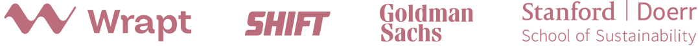
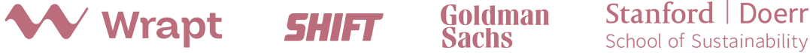

Yasmin Bashirova from San Francisco, has a unique edge over her competitors for several reasons. In addition to her diverse background in the fields of engineering, analysis, and finance, Yasmin now looks to the future of digitization and optimization of infrastructure.
 
STAY IN TOUCH

STAY IN TOUCH
Yasmin currently serves as Chief of Staff for a tech company based in San Francisco where she is able to research and develop. In this position, she prepares investor and fundraising materials and provides data-driven analyses for projects. In addition to her current position, Yasmin responded to the COVID-19 crisis by volunteering at Fix The Mask, a nonprofit dedicated to delivering a safe, effective, affordable, and comfortable mask design to medical professionals and the general public. While volunteering, she utilized her vast analytical and research skills to help drive efficiency and savings within the organization.
Read full story ▾Embracing Diversity When You Never Experienced It
Apr 19, 2023
5 min read
Mental Health Tools for Immigrants in the U.S.
Mar 1, 2023
4 min read
Mental Health Tools for Immigrants in the U.S.
Apr 19, 2023
5 min read
| Yasmin Bashirova shares 3 tips to nail online job interviews during the pandemic | youtube.com ↗ |
| Azerbaijani national living in US: I always tried to convey truth about Karabakh | report.az ↗ |
| Thousands of Bay Area Armenians march across Golden Gate Bridge to spotlight conflict in Caucasus | sfchronicle.com ↗ |
| Hundreds of Bay Area Azerbaijanis gather in S.F. to raise awareness for conflict in Caucasus | sfchronicle.com ↗ |